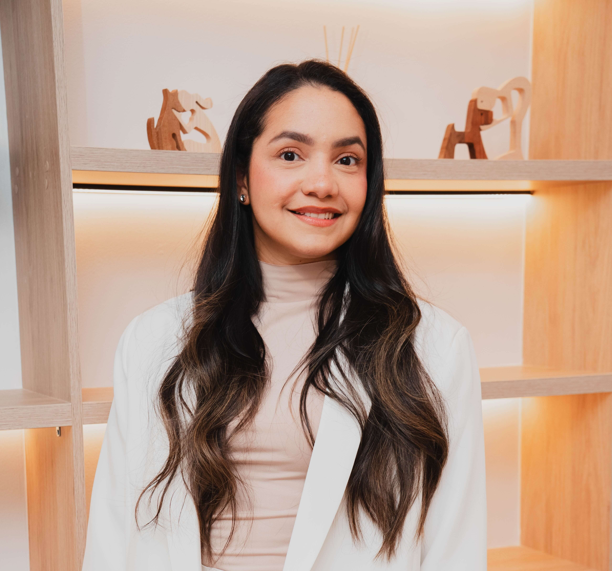
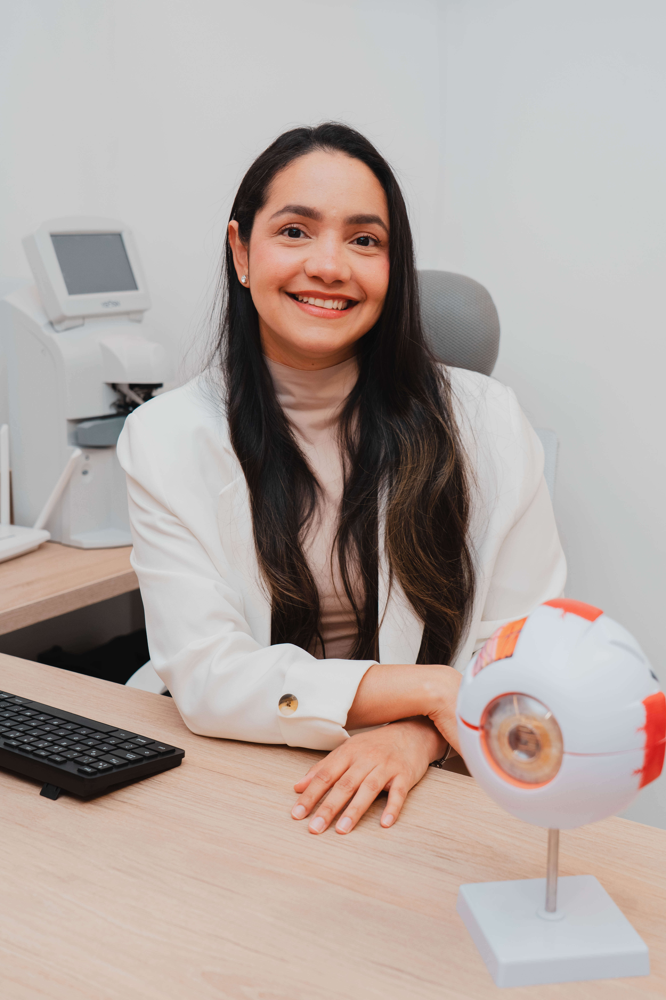
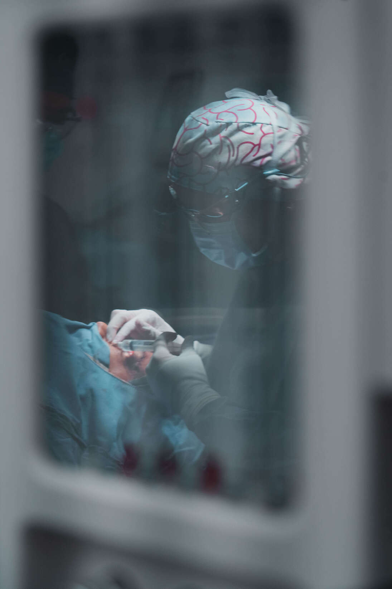

Oftalmología · Cirugía Plástica Ocular · Medellín Ophthalmology · Oculoplastic Surgery · Medellín
Soy la Dra. Linda Espinosa, oftalmóloga y cirujana oculoplástica en Medellín. Cuido la salud y la estética de tus párpados con un enfoque médico, honesto y personalizado: blefaroplastia, toxina botulínica, cirugía de ptosis y reconstrucción periocular. I'm Dr. Linda Espinosa, ophthalmologist and oculoplastic surgeon in Medellín. I care for the health and aesthetics of your eyelids with a medical, honest, and personalized approach: blepharoplasty, botulinum toxin, ptosis surgery, and periocular reconstruction.


Sobre la Dra. Linda Espinosa About Dr. Linda Espinosa
La oculoplastia es la subespecialidad que une la oftalmología con la cirugía plástica de la región periocular. En mi consulta en Medellín, mi prioridad es la salud visual y la función del párpado; el resultado estético es la consecuencia natural de un diagnóstico riguroso.
No emito presupuestos ni programo cirugías sin una valoración presencial. Cada mirada es un mundo y cada plan —ya sea una blefaroplastia, una corrección de ptosis o una aplicación de toxina botulínica— se diseña a medida, con honestidad sobre lo que la cirugía puede —y no puede— lograr.
Oculoplastics is the subspecialty that combines ophthalmology with plastic surgery of the periocular region. In my clinic in Medellín, my priority is visual health and eyelid function; the aesthetic outcome is the natural consequence of a rigorous diagnosis.
I don't issue quotes or schedule surgeries without an in-person evaluation. Every gaze is unique and every plan — whether a blepharoplasty, a ptosis correction, or a botulinum toxin treatment — is tailored, with honesty about what surgery can — and cannot — achieve.
Primero el ojo, luego la estética. Eye first, aesthetics second.
Diagnóstico antes que técnica. Diagnosis before technique.
Tu mirada, más descansada. Your gaze, more rested.
Servicios de oculoplastia Oculoplastic services
Cada tratamiento de oculoplastia se define después de una valoración presencial completa con la Dra. Linda Espinosa. Each oculoplastic treatment is defined after a complete in-person evaluation with Dr. Linda Espinosa.
Cirugía de párpados superior e inferior para rejuvenecer la mirada: exceso de piel y bolsas de grasa. En párpado inferior privilegio la técnica transconjuntival, sin cicatriz visible. Upper and lower eyelid surgery to rejuvenate the gaze: excess skin and fat pockets. For lower lids I favor the transconjunctival technique, with no visible scar.
Aplicación de toxina botulínica en Medellín con uso estético y funcional: líneas de expresión, apertura de la mirada, blefaroespasmo, espasmo hemifacial y retracción palpebral. Botulinum toxin in Medellín for aesthetic and functional use: expression lines, brighter gaze, blepharospasm, hemifacial spasm and lid retraction.
Corrección del párpado caído cuando el músculo elevador ha perdido fuerza. Mejora el campo visual y devuelve la simetría a tu mirada. Correction of drooping eyelid when the levator muscle has lost strength. Improves visual field and restores gaze symmetry.
Diagnóstico y tratamiento de la obstrucción de la vía lagrimal (epífora): cuando el "desagüe" natural del ojo se bloquea y la lágrima desborda constantemente. Diagnosis and treatment of lacrimal duct obstruction (epiphora): when the eye's natural "drain" is blocked and tears overflow constantly.
Cirugía reconstructiva en ectropión, entropión, parálisis facial, tumores palpebrales y xantelasmas. Recupera la función protectora del párpado. Reconstructive surgery for ectropion, entropion, facial palsy, eyelid tumors and xanthelasma. Restores the protective function of the eyelid.
Ajuste quirúrgico de la esquina externa del ojo para dar soporte al párpado inferior y prevenir su apariencia caída tras una blefaroplastia o por el paso del tiempo. Surgical adjustment of the outer corner of the eye to support the lower lid and prevent a sagging look after blepharoplasty or with age.

Por qué la valoración importa Why the evaluation matters
Toxina botulínica Botulinum toxin
Una proteína estudiada y segura cuando es aplicada por un especialista en oculoplastia. No paraliza el rostro: modula con precisión los músculos que generan las líneas de expresión. A well-studied, safe protein when applied by an oculoplastic specialist. It doesn't paralyze the face — it modulates with precision the muscles that create expression lines.
Prepárate Get ready
Ven sin maquillaje para poder examinar bien tu piel y pestañas, o ven preparada para retocar después. Come without makeup so I can examine your skin and lashes properly — or come ready to touch up afterward.
Anótalas. Pregunta todo sobre anestesia, dolor y recuperación. No te quedes con nada por dentro. Write them down. Ask everything about anesthesia, pain and recovery — don't hold anything back.
Si tomas algo para presión, corazón o aspirina, dímelo con dosis e intervalos durante la consulta. If you take anything for blood pressure, heart conditions or aspirin, tell me — including doses and intervals.
Si es posible, evita usarlos: interfieren con la evaluación de la superficie ocular y la toma de presión intraocular. If possible, avoid them: they interfere with ocular surface evaluation and intraocular pressure measurement.
Recibirás un recordatorio 24 horas antes. Tu confirmación oportuna optimiza los tiempos de todos. You'll receive a reminder 24 hours in advance. Your timely confirmation helps everyone's schedule.
Siempre bienvenido. En algunos casos la visión queda borrosa unos minutos, así que es una buena idea. Always welcome. In some cases vision may be blurry for a few minutes, so it's a good idea.
FAQ
Consultorio en Medellín Clinic in Medellín
Calle 20 #43F-113
Piso 13 · Consultorio 1311
Torre Médica Comedal
Parqueadero disponible en la torre. Parking available in the building.
$300.000 COP
Efectivo o transferencia Bancolombia. Atención exclusivamente particular. Cash or Bancolombia transfer. Private practice only.
Reserva en línea a través de Doctoralia. Recibirás un recordatorio 24 horas antes. Book online via Doctoralia. You'll receive a reminder 24 hours in advance.
Agenda tu valoración Book a consultation